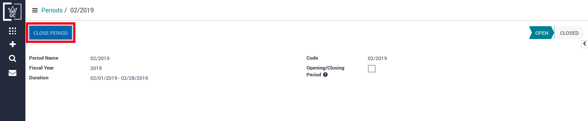

For instance, Fiscal Year 2018 needs to be closed.
To define new fiscal year, go to Invoicing/Configuration/Periods/Fiscal Years
Periods can be defined in two formats: Monthly Periods and 3 Months Periods
For instance, to create monthly periods, click on Create Monthly Periods button.
Define Income and Expense account for opening entries (if not created).
Opening Income Account
Opening Expense Account
To define Opening Entries Journal, go to Invoicing/Configuration/Accounting/Journal
Set previously created accounts in Default Debit Account and Default Credit Account
To generate Opening Entries, go to Invoicing/Periodic Processing/End of Period/Generate Opening Entries
Click on Create button to generate openning entries.
Generated opening entries
Click on Post button to Post this journal entry.
To cancel fiscal year closing entries, go to Invoicing/Periodic Processing/End of Period/Cancel Closing Entries
Enter Fiscal Year whose closing entries needs to be cancelled.
Click on Cancel Closing Entries button to cancel closing entries.
Once the closing entries are cancelled, you will no longer find opening entries for current fiscal year. To create opening entries for current fiscal year, you need to re-generate openeing entries.
To close fiscal year, go to Invoicing/Periodic Processing/End of Period/Close a Fiscal Year
Enter Fiscal Year to close.
Click on Close Fiscal Year button to close it.
To close a period, go to Invoicing/Periodic Processing/End of Period/Close Period
Click on Close Period button to close it.
